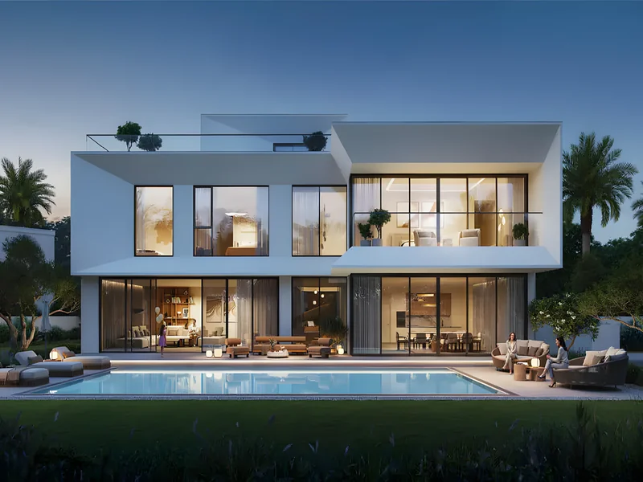
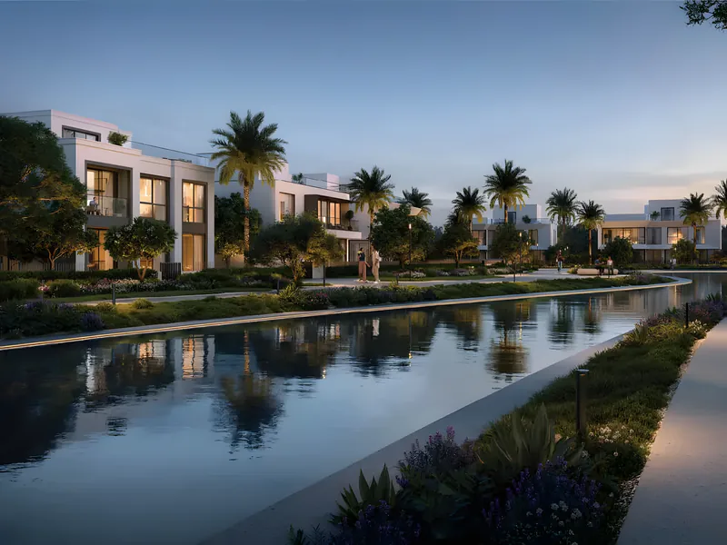
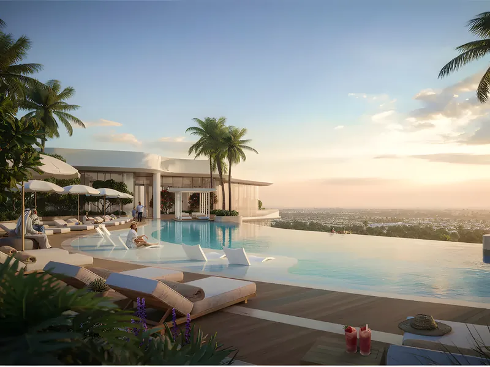
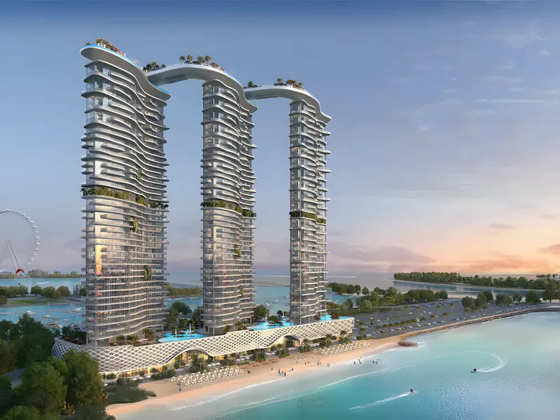
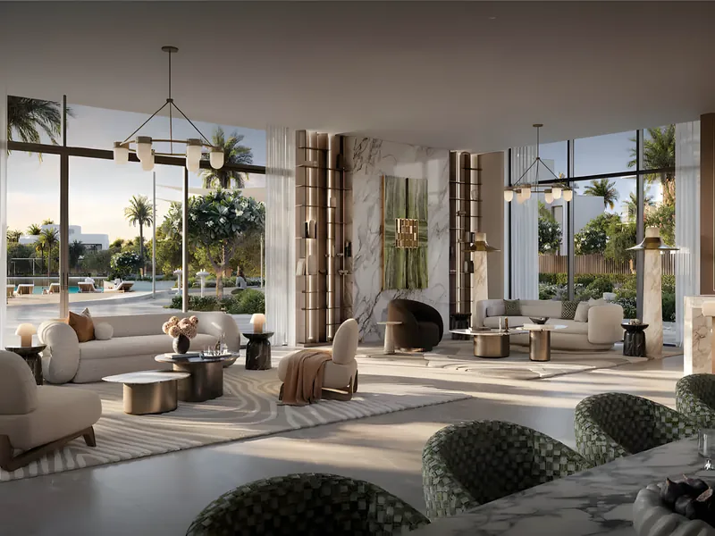

Dubaj
Proč uvažovat o koupi nemovitosti v Dubaji?
- Jedna z nejvyhledávanějších světových destinací. Přes 17 milionů návštěvníků ročně potvrzuje dlouhodobou atraktivitu místa.
- Moderní město propojené s mořem. Pláže, architektura, služby a městský život v jednom celku.
- Mezinárodní prostředí. Více než 80 % obyvatel tvoří cizinci. Angličtina je běžným jazykem každodenní komunikace.
- Jasně nastavené vlastnictví pro cizince. Přehledná pravidla nákupu nemovitostí ve vybraných lokalitách.
- Snadná dostupnost z Evropy. Přímé lety z většiny evropských měst, přibližně 6 hodin z Prahy.